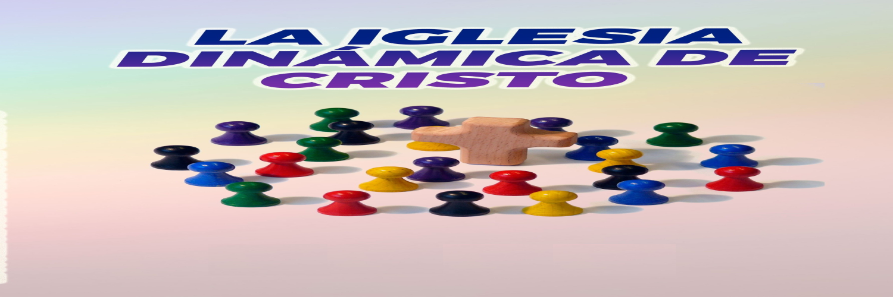
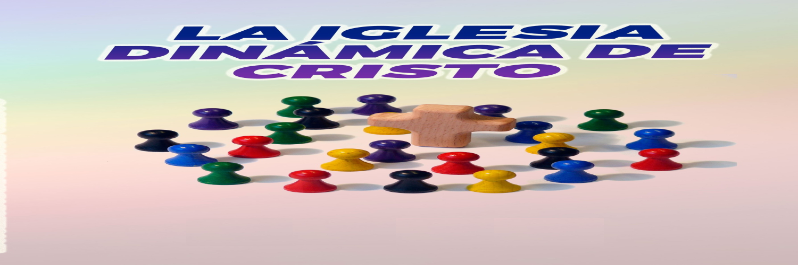

Jovenes Ganando Generaciones para Cristo
 

DINAMICA
"El Juego de las 7 Bendiciones"
(Basado en los 7 días de la Creación de Génesis)
📜 Objetivo:
Identificar y valorar las bendiciones concretas que Dios nos regala a través del Domingo (descanso, comunidad, fe, alegría, etc.)
Materiales:
- 7 globos inflados
- Papeles pequeños con una "bendición del Domingo" escrita en cada uno.
Paso 1
Dentro de cada globo coloca una de estas bendiciones:
1. Descanso verdadero (físico y espiritual).
2. Hablar con Dios (oración).
3. Tiempo en familia o amigos.
4. Alegría sin prisas (disfrutar pequeñas cosas).
5. Oportunidad para servir (visitar a un enfermo, ayudar en casa).
6. Renovar fuerzas para la semana.
7. Gratitud (reconocer lo bueno de la vida).
PASO 2
Revientan los globos uno por uno.
El que reventó el globo comparte una experiencia personal